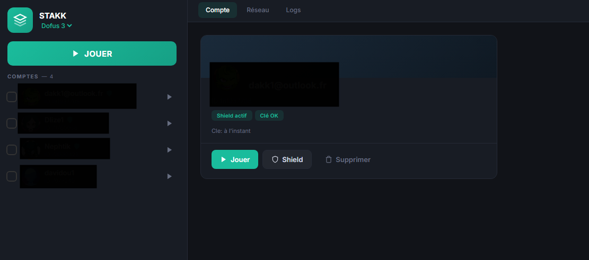

STAKK centralise le lancement, l'import et la gestion de comptes Dofus 3, Dofus Retro, Wakfu et Dofus Touch — en contournant les limitations monocompte des serveurs.

Une interface unique pour gérer tes comptes, tes IPs, tes Shields, et tes raccourcis — sans quitter le navigateur.
Tes comptes sont détectés directement depuis le launcher officiel — pas de saisie de tes identifiants.
Lance autant d'instances que ta machine peut encaisser, en parallèle, sur un seul PC.
Gère automatiquement les certificats Shield via Email & OTP / Authenticator. Sans friction.
Associe chaque compte à une IP ou un proxy SOCKS5 — indispensable pour Dofus Retro.
Switch instantané entre les comptes. Définis tes propres touches par personnage.
Indicateurs visuels : état du Shield, validité des clés, activité récente. Tu vois ce qui compte.
Chaque jeu a ses règles. STAKK les applique au bon endroit, automatiquement.
De zéro à multi-compte en moins de deux minutes.
Récupère la dernière release sur GitHub et extrais le zip où tu veux.
L'interface web s'ouvre dans ton navigateur par défaut automatiquement.
Authentification en un clic — tes comptes sont importés du launcher Ankama.
Coche les comptes à lancer, choisis le jeu, clique sur PLAY. C'est tout.
Télécharge STAKK, teste gratuitement pendant 3 jours, et vois par toi-même.
Télécharger STAKKSTAKK cible Windows 10 / 11 64-bit. Pour Dofus Touch tu as besoin d'un navigateur Chromium (Chrome, Edge, Brave) — WebUSB n'est pas dispo sur Firefox ou Safari.
Sur Dofus 3 et Wakfu : illimité, tant que ton PC tient le coup. Sur Dofus Retro : 1 compte par IP (règle Ankama) — utilise une seconde connexion (ex. clé 4G USB) pour chaque compte supplémentaire.
On clone l'APK Dofus Touch (via apktool + uber-apk-signer) pour créer plusieurs installations indépendantes sur un seul téléphone Android branché en USB. Chaque clone tourne dans son propre onglet, avec un affichage virtuel isolé — ton écran d'accueil reste privé.
STAKK lit les comptes directement depuis le launcher Ankama installé localement et les stocke chiffrés sur ton PC. Aucun mot de passe ne transite par des serveurs tiers.
3 jours d'accès complet, une seule fois par compte Discord. Toutes les fonctionnalités sont débloquées — aucune carte bancaire demandée.
Oui. Les correctifs protocole et logiques de lancement sont poussés en hot-update — pas besoin de télécharger une nouvelle version à chaque patch.